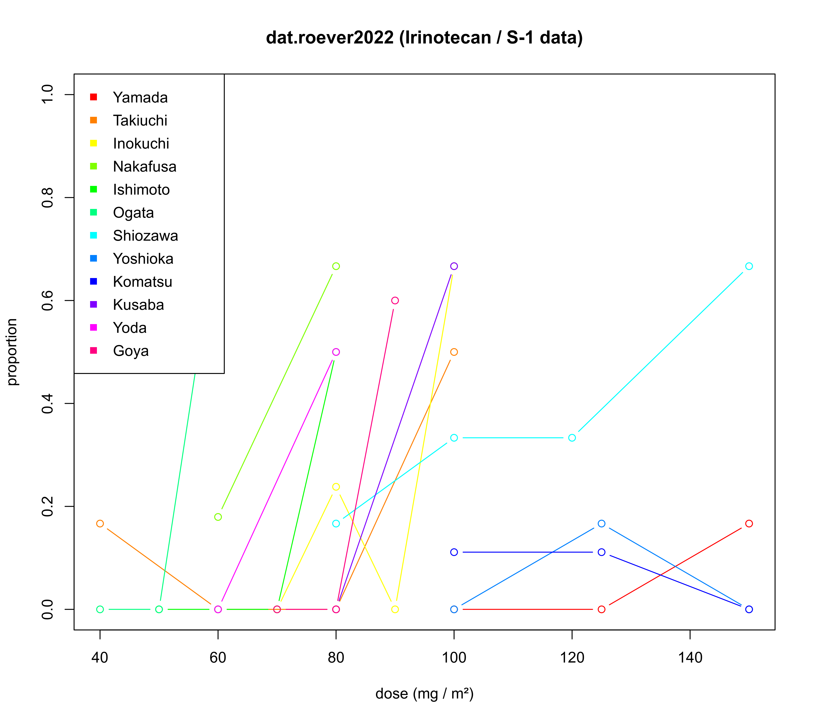

dat.roever2022.Rd12 studies investigating the occurrence of dose limiting toxicities (DLTs) at different doses of a combination therapy of Irinotecan and S-1.
dat.roever2022The data frame contains the following columns:
| study | character | study label |
| year | integer | publication year |
| dose | numeric | dose (\(\mathrm{mg} / \mathrm{m}^2\)) |
| events | integer | number of DLTs |
| total | integer | number of patients exposed |
A combination therapy of Irinotecan (a topoisomerase 1 inhibitor) and S-1 (a combination of three pharmacological compounds, namely, tegafur, gimeracil, and oteracil potassium) was tested in advanced colorectal and gastric cancer. This dataset contains data from twelve studies investigating this therapy in a Japanese population; it contains the doses investigated, the numbers of patients treated, and the number of dose-limiting toxicities (DLTs) observed. In general, each study investigated several doses according to some dose-escalation scheme.
Ursino, M., Röver, C., Zohar, S., & Friede T. (2021). Random-effects meta-analysis of phase I dose-finding studies using stochastic process priors. The Annals of Applied Statistics, 15(1), 174–193. https://doi.org/10.1214/20-AOAS1390
Röver, C., Ursino, M., Friede, T., & Zohar, S. (2022). A straighforward meta-analysis approach for oncology phase I dose-finding studies. Statistics in Medicine, 41(20), 3915–3940. https://doi.org/10.1002/sim.9484
European Medicines Agency (EMA) (2021). Onivyde pegylated liposomal (irinotecan hydrochloride trihydrate) EPAR summary. https://www.ema.europa.eu/en/medicines/human/EPAR/onivyde-pegylated-liposomal
European Medicines Agency (EMA) (2022). Teysuno (tegafur/gimeracil/oteracil) EPAR summary. https://www.ema.europa.eu/en/medicines/human/EPAR/teysuno
Yamada, Y., Yasui, H., Goto, A., et al. (2003). Phase I study of irinotecan and S-1 combination therapy in patients with metastatic gastric cancer. International Journal of Clinical Oncology, 8(6), 374–380. https://doi.org/10.1007/s10147-003-0359-z
Takiuchi, H., Narahara, H., Tsujinaka, T., et al. (2005). Phase I study of S-1 combined with irinotecan (CPT-11) in patients with advanced gastric cancer (OGSG 0002). Japanese Journal of Clinical Oncology, 35(9), 520–525. https://doi.org/10.1093/jjco/hyi148
Inokuchi, M., Yamashita, T., Yamada, H., et al. (2006). Phase I/II study of S-1 combined with irinotecan for metastatic advanced gastric cancer. British Journal of Cancer, 94(8), 11130. https://doi.org/10.1038/sj.bjc.6603072
Nakafusa, Y., Tanaka, M., Ohtsuka, T., et al. (2008). Phase I/II study of combination therapy with S-1 and CPT-11 for metastatic colorectal cancer. Molecular Medicine Reports, 1(6), 925–930. https://doi.org/10.3892/mmr_00000051
Ishimoto, O., Ishida, T., Honda, Y., Munakata, M., & Sugawara, S. (2009). Phase I study of daily S-1 combined with weekly irinotecan in patients with advanced non-small cell lung cancer. International Journal of Clinical Oncology, 14(1), 43–47. https://doi.org/10.1007/s10147-008-0796-9
Ogata, Y., Sasatomi, T., Akagi, Y., Ishibashi, N., Mori, S., & Shirouzu, K. (2009). Dosage escalation study of S-1 and irinotecan in metronomic chemotherapy against advanced colorectal cancer. The Kurume Medical Journal, 56(1+2), 1–7. https://doi.org/10.2739/kurumemedj.56.1
Shiozawa, M., Sugano, N., Tsuchida, K., Morinaga, S., Akaike, M., & Sugimasa, Y. (2009). A phase I study of combination therapy with S-1 and irinotecan (CPT-11) in patients with advanced colorectal cancer. Journal of Cancer Research and Clinical Oncology, 135(3), 365–370. https://doi.org/10.1007/s00432-008-0480-5
Yoshioka, T., Kato, S., Gamoh, M., et al. (2009). Phase I/II study of sequential therapy with irinotecan and S-1 for metastatic colorectal cancer. British Journal of Cancer, 101, 1972–1977. https://doi.org/10.1038/sj.bjc.6605432
Komatsu, Y., Yuki, S., Fuse, N., et al. (2010). Phase 1/2 clinical study of irinotecan and oral S-1 (IRIS) in patients with advanced gastric cancer. Advances in Therapy, 27(7), 483–492. https://doi.org/10.1007/s12325-010-0037-2
Kusaba, H., Esaki, T., Futami, K., et al. (2010). Phase I/II study of a 3-week cycle of irinotecan and S-1 in patients with advanced colorectal cancer. Cancer Science, 101(12), 2591–2595. https://doi.org/10.1111/j.1349-7006.2010.01728.x
Yoda, S., Soejima, K., Yasuda, H., et al. (2011). A phase I study of S-1 and irinotecan combination therapy in previously treated advanced non-small cell lung cancer patients. Cancer Chemotherapy and Pharmacology, 67(3), 717–722. https://doi.org/10.1007/s00280-010-1539-y
Goya, H., Kuraishi, H., Koyama, S., et al. (2012). Phase I/II study of S-1 combined with biweekly irinotecan chemotherapy in previously treated advanced non-small cell lung cancer. Cancer Chemotherapy and Pharmacology, 70(5), 691–697. https://doi.org/10.1007/s00280-012-1957-0
medicine, oncology, dose-response models
# show (some) data
head(dat.roever2022, n=10)
#> study year dose events total
#> 1 Yamada 2003 100 0 3
#> 2 Yamada 2003 125 0 3
#> 3 Yamada 2003 150 1 6
#> 4 Takiuchi 2005 40 1 6
#> 5 Takiuchi 2005 60 0 3
#> 6 Takiuchi 2005 80 0 4
#> 7 Takiuchi 2005 100 3 6
#> 8 Inokuchi 2006 70 0 3
#> 9 Inokuchi 2006 80 10 42
#> 10 Inokuchi 2006 90 0 3
# illustrate data
plot(NA, xlim=range(dat.roever2022$dose), ylim=0:1,
xlab="dose (mg / m²)", ylab="proportion",
main="dat.roever2022 (Irinotecan / S-1 data)")
studylab <- unique(dat.roever2022$study)
colvec <- rainbow(length(studylab))
for (i in 1:length(studylab)) {
idx <- (dat.roever2022$study == studylab[i])
lines(dat.roever2022[idx,"dose"],
dat.roever2022[idx,"events"] / dat.roever2022[idx,"total"],
col=colvec[i], type="b")
}
legend("topleft", studylab, col=colvec, pch=15)
